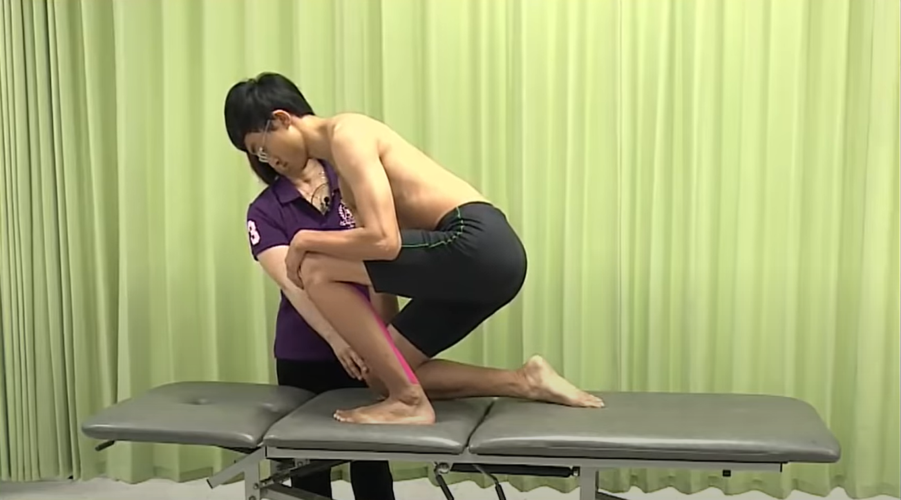
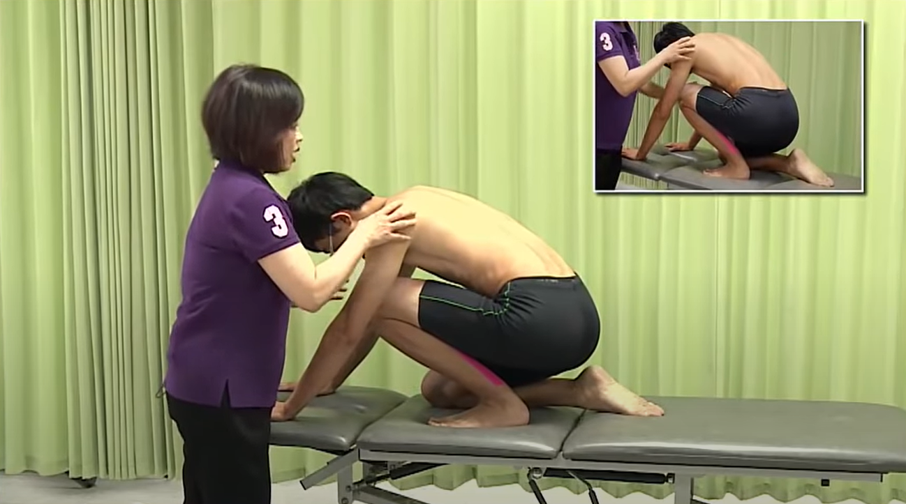

比目魚肌拉筋
相關症狀
- 足跟骶步或後側疼痛乃至無法行走(尤其是上山或上下樓梯時)，常造成蹠背屈活動度受限。疼痛可能擴及跟腱部位，偶爾也可能呈現在同側髂骶關節疼痛或小腿肚中上段疼痛(此處局部壓痛點可能與小腿肚或足踝水腫有關)
誘痛因子
- 肌肉過度使用例如鞋底磨擦力不足、行走於沙灘等軟質而不平的地面、爬山或上下樓梯，長期穿高跟鞋導致肌肉短縮，局部肌肉外商、或肌肉受到壓迫(襪頭過緊)或割傷影響到血液循環等
操作辦法
- 1. 蹲跪姿，患側腳在前，腱側跪坐在後 
- 2. 兩手扶在前方使身體盡量前傾，重心前移 
- 3. 患側腳根不可離地